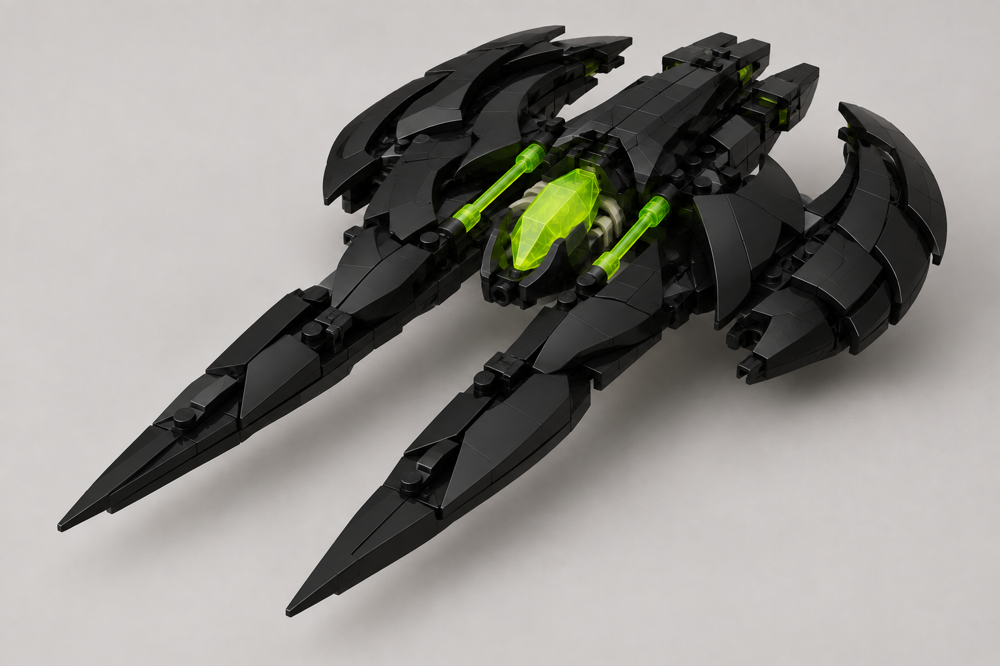

Production Design Target
Запропонований завершений вигляд
Нова складена композиція на основі трьох офіційних родинних кораблів LEGO; це не фото офіційного набору.
Фракція: Прибульці · Роль: легкий наземний hover-атакувач проти легких цілей і робітників
Alien Jet лишається повітряним перехоплювачем; Razor Skimmer тисне на наземні цілі.

Нова складена композиція на основі трьох офіційних родинних кораблів LEGO; це не фото офіційного набору.
unit.aliens.razor_skimmer../tools/verify.sh --targeted design-package; package-specific identity, hash, state і посилання перевіряються окремо.